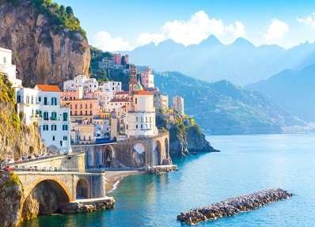
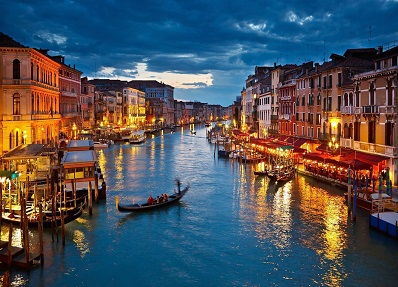
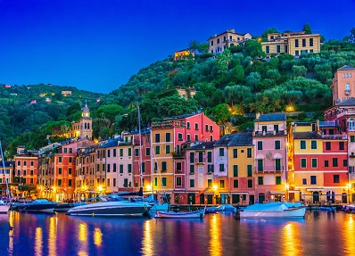

Galería
-

Nápoles
Nápoles se encuentra en uno de los paisajes más bellos del viejo continente, junto al golfo que lleva su nombre, donde las islas de Capri e Ischia levitan en el horizonte azul, con el imponente Vesubio al fondo, recordándole a la ciudad que la amenaza sigue allí.
-

Venecia
Conocida como la 'reina del Adriático', la 'Serenísima' o la 'ciudad de los canales', Venecia es la capital de la región italiana de Véneto. Situada en una laguna pantanosa en el mar Adriático, entre las desembocaduras de los ríos Po y Piave, la ciudad de Venecia está formada por 120 pequeñas islas, comunicadas entre sí por centenares de puentes, ríos y canales, algunos de ellos de gran belleza.
-

Florencia
La Florencia renacentista simboliza uno de los momentos más brillantes del talento humano, en el que la riqueza permitió que el arte se convirtiera en una forma de vida. El potencial económico de esta ciudad como gran centro industrial y financiero propició esta atmósfera social, que alcanzó su apogeo en el siglo XV, bajo el gobierno de los Medici.